第 6 章 ストレンジアトラクタ
第 3 章で見たとおり、2 次元の連続時間の系ではカオスは起きない。この章では、3 次元の連続時間の系と 2 次元の写像で現れるカオスを調べる。それらの軌道は、状態空間の中でストレンジアトラクタ（strange attractor）と呼ばれる、複雑で美しい形を描く。また、エネルギーが保存される系に現れる、性質の異なるカオスも紹介する。
散逸系と保存系
力学系は、状態空間の体積（2 次元なら面積）の変わり方によって、大きく 2 つに分けられる。
散逸系（dissipative system）：摩擦などでエネルギーが失われる系。状態空間の領域は、時間とともに体積が縮む。
保存系（conservative system）：摩擦のない力学系（ハミルトン系）。エネルギーが保存され、状態空間の領域は、形を変えても体積は変わらない（リウヴィルの定理）。
連続時間の系 \(\dot{\boldsymbol{x}} = F(\boldsymbol{x})\) では、ベクトル場の発散（divergence）\(\nabla \cdot F = \sum_i \partial F_i / \partial x_i\) が、体積が変化する割合を表す。発散が負なら体積は縮み、0 なら保たれる。写像では、ヤコビ行列の行列式の絶対値 \(|\det J|\) が、1 回の反復で面積（体積）が何倍になるかを表す。
散逸系では、状態空間の領域は最終的に体積 0 の集合に縮む。それがアトラクタである。固定点（0 次元）やリミットサイクル（1 次元）は体積 0 の集合の例である。ところが、カオス的な系では、軌道は近くの軌道と離れ続けるので、1 点や 1 本の閉曲線には落ち着けない。体積は 0 に縮みながら、ある方向には引き伸ばされ続ける。その結果できるのが、無限に細かく折り重なった構造を持つストレンジアトラクタである。「ストレンジ（奇妙な）」という名前は、1971 年にリュエルとターケンスが付けた。
ローレンツ方程式
1963 年、ローレンツ（第 5 章）は、大気の対流を極端に単純化した、次の 3 変数の微分方程式を調べた。
\(x\) は対流の強さ、\(y\) と \(z\) は温度分布のずれを表す。ローレンツが使った \(\sigma = 10\)、\(\rho = 28\)、\(\beta = 8/3\) では、軌道は 図 21 のような、蝶の羽のような形のアトラクタを描く。
23def lorenz(state: Vector) -> Vector:
24 """ローレンツ方程式の右辺."""
25 x, y, z = state[..., 0], state[..., 1], state[..., 2]
26 return np.stack([SIGMA * (y - x), x * (RHO - z) - y, x * y - BETA * z], axis=-1)

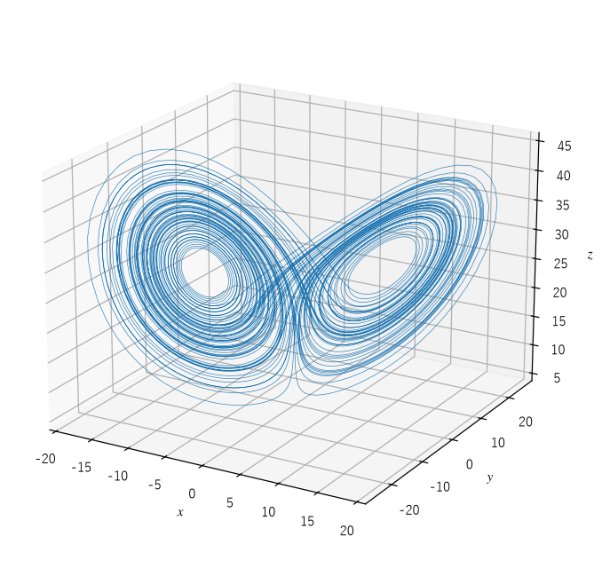
図 21 ローレンツ・アトラクタ
軌道は、左右 2 つの羽のどちらかで数回ぐるぐると回った後、不規則なタイミングでもう一方の羽に移る。何回回ってから移るかには周期性がなく、予測が難しい。発散は \(\nabla \cdot F = -\sigma - 1 - \beta \approx -13.7\) で、状態空間の体積は単位時間あたり \(e^{-13.7}\) 倍に縮む。体積は急速に 0 に近づくので、アトラクタは厚みを持たない「面」のように見える。しかし、拡大すると、面に見えたものは無数の薄い層が重なった構造をしている。
図 22 は、\(x\) の初期値が \(10^{-8}\) だけ違う 2 つの軌道の \(x(t)\) である。時刻 30 付近までは区別できないが、その後はまったく別の動きをする。

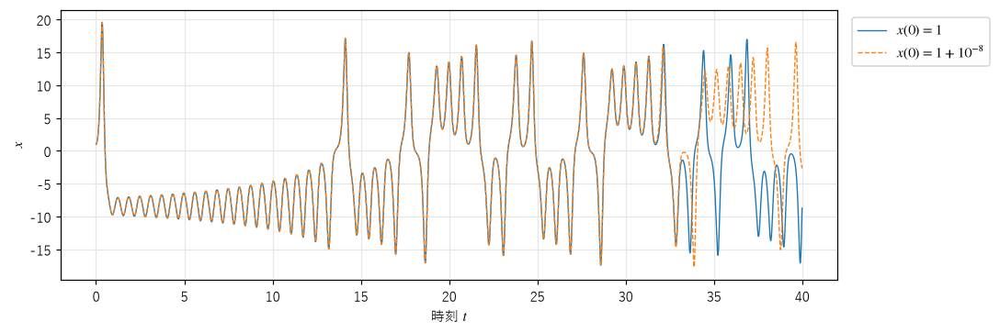
図 22 初期値がわずかに違う 2 つの軌道の \(x(t)\)
ローレンツがこの現象に気付いたのは、計算を途中から再開するときに、印刷された 3 桁に丸めた値を入力したことがきっかけだった。丸めによるわずかな違いが、しばらくすると計算結果をまったく違うものにしていたのである。
ローレンツ写像
ローレンツは、連続的な軌道から、\(z(t)\) の極大値 \(M_k\) だけを順に取り出し、\(M_k\) と次の極大値 \(M_{k+1}\) の関係をプロットした（図 23）。

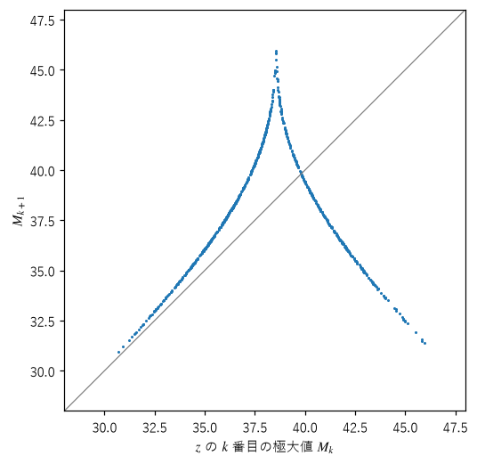
図 23 ローレンツ写像（\(z\) の極大値の連続する組）
点はほぼ 1 本の曲線の上に並び、テント写像（第 4 章）に似た形をしている。つまり、3 次元の複雑な軌道の振る舞いの本質は、1 次元の写像 \(M_{k+1} = g(M_k)\) で表せる。曲線の傾きの絶対値はどこでも 1 より大きいので、この写像はカオス的である。3 次元の連続時間の系の解析が、1 次元の写像の解析に帰着できることは、カオスの研究で繰り返し使われる考え方である。
レスラー方程式とポアンカレ断面
1976 年にオットー・レスラーが考案した方程式
は、非線形の項が \(zx\) の 1 つだけという、ローレンツ方程式よりさらに単純な形をしている。\(a = b = 0.2\)、\(c = 5.7\) では、図 24 のようなアトラクタが現れる。軌道は \(xy\) 平面の近くで外側へ渦を巻きながら広がり、外側に来ると \(z\) 方向に持ち上げられ、折り返されて内側に戻る。第 4 章で説明した引き伸ばしと折り畳みが、そのまま目に見える形になっている。

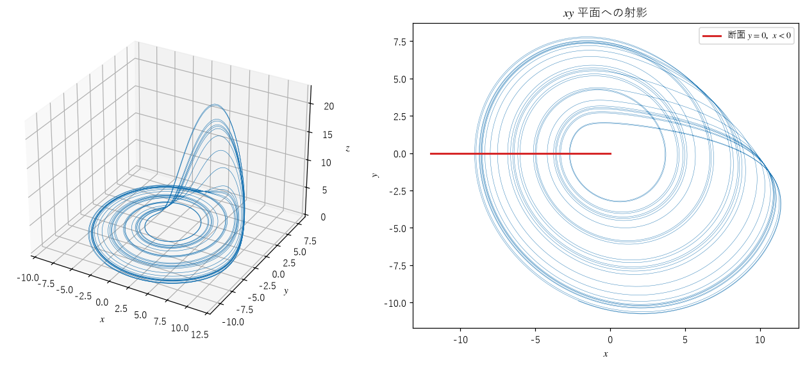
図 24 レスラー・アトラクタ（左）と、その \(xy\) 平面への射影（右）。赤い線は次に説明するポアンカレ断面。
連続時間の系を調べる強力な方法に、ポアンカレ断面（Poincaré section）がある。状態空間に、軌道が横切る面（断面）を置き、軌道が断面を同じ向きに横切るたびに、その位置を記録する。\(k\) 回目の位置から \(k + 1\) 回目の位置を決める写像をポアンカレ写像（Poincaré map）という。断面を 1 回横切って閉じる周期軌道は、断面上の固定点になる。こうして、連続時間の系の問題は、1 次元低い写像の問題になる。
ここでは、半平面 \(y = 0\)、\(x < 0\) を断面とし、軌道が \(y > 0\) から \(y < 0\) へ横切る位置を、前後の 2 点の線形補間で求める。
30def section_crossings(xs: Vector) -> NDArray[np.float64]:
31 """軌道 xs が半平面 {y = 0, x < 0} を y > 0 から y < 0 へ横切る点の x 座標を返す.
32
33 横切る前後の 2 点を直線で結び、y = 0 になる位置を線形補間で求める。
34 """
35 y0, y1 = xs[:-1, 1], xs[1:, 1]
36 idx = np.nonzero((y0 > 0.0) & (y1 <= 0.0) & (xs[:-1, 0] < 0.0))[0]
37 s = y0[idx] / (y0[idx] - y1[idx])
38 result: NDArray[np.float64] = xs[idx, 0] + s * (xs[idx + 1, 0] - xs[idx, 0])
39 return result
横切る位置を \(u_k = -x\) として、\(u_k\) と \(u_{k+1}\) の関係を描いたのが 図 25 である。点は山を 1 つ持つ曲線の上に並び、ロジスティック写像のグラフによく似ている。実際、レスラー方程式は、パラメータ \(c\) を大きくしていくと、周期倍分岐を繰り返してカオスに至る。第 4 章で学んだ 1 次元写像の知識が、そのまま 3 次元の連続時間の系に当てはまる。

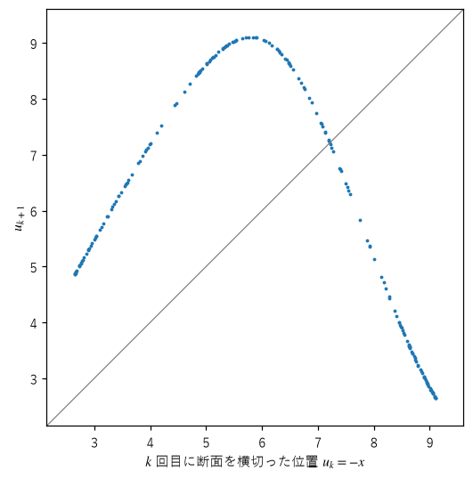
図 25 レスラー方程式のポアンカレ写像
エノン写像
1976 年、天文学者のミシェル・エノンは、ローレンツ方程式のポアンカレ写像の性質をまねた、2 次元の写像を考案した。
\(a = 1.4\)、\(b = 0.3\) が標準的なパラメータである。ヤコビ行列の行列式は \(-b\) なので、1 回の反復で面積は \(|b| = 0.3\) 倍に縮む。また、逆写像を一意に求められる（逆にたどれる）写像である。

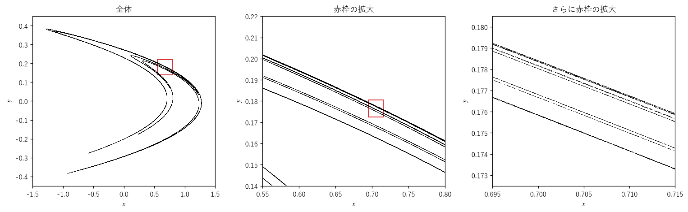
図 26 エノン・アトラクタ（左）と、赤枠の部分を順に拡大した図（中、右）
図 26 の左図では、アトラクタはブーメランのような形の数本の曲線に見える。赤枠の部分を拡大すると（中央の図）、1 本に見えた曲線が、近接した数本の曲線の束であることが分かる。さらに拡大すると（右の図）、その 1 本もまた細い曲線の束になっている。このような構造は、拡大を何度繰り返しても現れる。曲線を横切る方向に見ると、点の並び方は第 7 章で扱うカントール集合に似た構造をしている。
エノン写像は、1 回の反復で、領域を引き伸ばし（\(-a x^2\) の項）、折り曲げ、縦に押しつぶして（\(b x\) の項）元の領域に重ねる。この操作の繰り返しが、層の中に層がある構造を作る。エノン・アトラクタのフラクタル次元は約 1.26 で、1 次元の曲線と 2 次元の面の中間の値になる（第 10 章）。
保存系のカオス
摩擦がなく、エネルギーが保存される系にもカオスは現れる。ただし、体積が縮まないので、アトラクタは存在しない。軌道は、初期値によって決まるエネルギーの面の上を、いつまでも動き続ける。
二重振り子
振り子の先にもう 1 つの振り子をつないだ二重振り子（double pendulum）は、保存系のカオスの代表例である。状態は 2 本の棒の角度と角速度の 4 つの数で表される。図 27 は 2 つ目のおもりの軌跡、図 28 は初期角度が \(10^{-6}\) ラジアンだけ違う 2 つの振り子の角度の比較である。

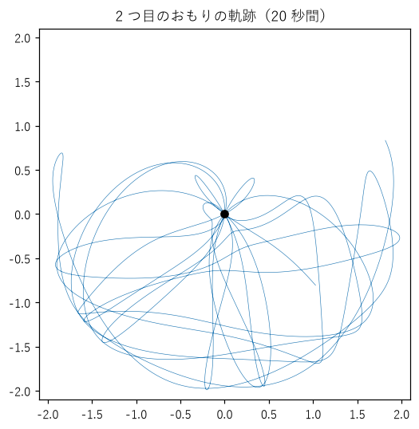
図 27 二重振り子の 2 つ目のおもりの軌跡（2 本の棒を水平より少し上まで持ち上げて離した場合）

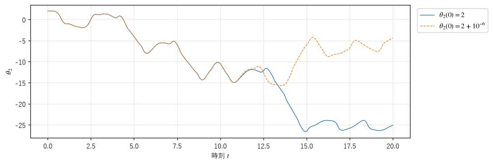
図 28 初期角度がわずかに違う 2 つの振り子の、2 本目の棒の角度
図 29 は、初期角度が 0.001 ラジアンずつ違う 3 つの振り子を重ねて動かしたアニメーションである。最初は 1 つに見えるが、数秒後にはばらばらに動き出す。

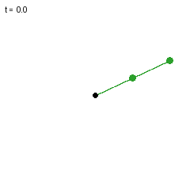
図 29 初期角度がわずかに違う 3 つの二重振り子
数値計算でエネルギーがどれだけ保たれているかを確かめた結果を次に示す。20 秒間の計算で、エネルギーの変化は初期値の約 1000 万分の 1 に収まっている。
エネルギーの初期値: 12.247201
20 秒間のエネルギーの変化の最大値: 1.93e-06
なお、二重振り子は、初期角度が小さい（揺れが小さい）ときには、ほぼ規則的な振動をする。カオス的になるのは、エネルギーが大きく、2 本目の棒が回転できるくらい大きく揺れる場合である。
標準写像と KAM 理論
保存系のカオスの性質を調べるのによく使われるのが、標準写像（standard map、チリコフ写像）である。
これは、周期的に叩かれる回転子（キックローター）の、1 回のキックごとの角度 \(\theta\) と角運動量 \(p\) の変化を表す。ヤコビ行列の行列式は 1 なので、面積を保つ写像である。図 30 は、ランダムに選んだ 150 個の初期値から 800 回ずつ反復した点を、初期値ごとに色を変えて描いたものである。

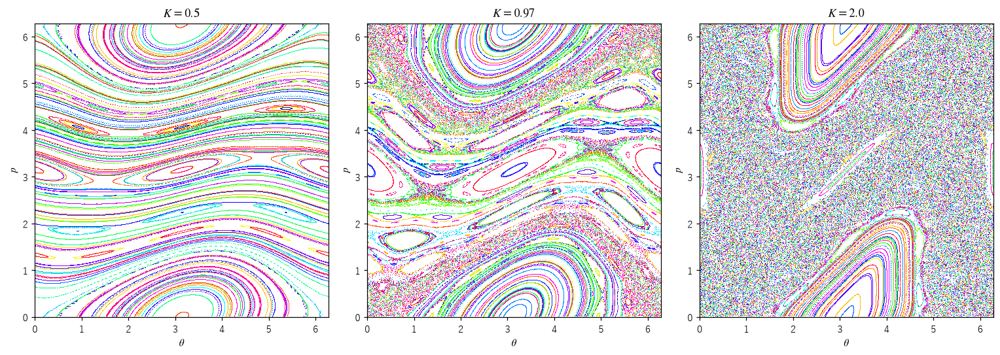
図 30 標準写像の位相図。左から \(K = 0.5\)、0.97、2.0。
\(K = 0.5\)：ほとんどの軌道は、左右に横切る曲線や、島のような閉曲線の上に並ぶ。これらの曲線は不変曲線（invariant curve。連続時間の系で見れば、不変トーラスと呼ばれる面の断面）と呼ばれ、軌道は規則的（準周期的）である。
\(K = 0.97\)：島と曲線の間に、点がばらばらに散らばった領域（カオスの海）が広がる。後で述べる臨界値 0.9716 のわずかに手前で、左右に横切る曲線はほとんど壊れている。
\(K = 2.0\)：カオスの海が大部分を占め、規則的な島がいくつか残るだけになる。
規則的に解ける（可積分な）保存系に小さな摂動（乱れ）を加えたとき、規則的な軌道の多くが（形を変えながらも）生き残ることを保証するのが、KAM 理論（コルモゴロフ、アーノルド、モーザーの名に由来する）である。摂動が強くなると、規則的な軌道は少しずつ壊れてカオスの海に飲み込まれる。標準写像で、左右に横切る曲線が最後の 1 本まで壊れるのは \(K \approx 0.9716\) であることが、数値計算によって知られている。保存系では、規則的な運動とカオス的な運動が、状態空間の中で複雑に入り組んで共存する。
ジェネラティブアートで人気のアトラクタ
三角関数だけでできた次の 2 つの写像は、パラメータ \(a, b, c, d\) を変えると多彩な形のアトラクタを描くので、ジェネラティブアートの題材として人気がある。

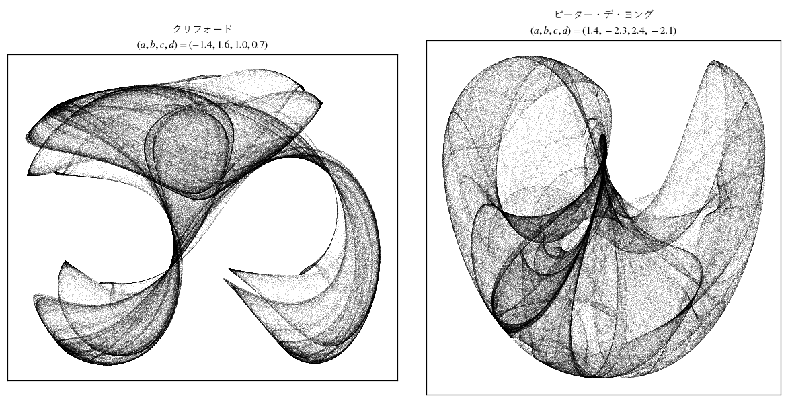
図 31 クリフォード・アトラクタ（左）とピーター・デ・ヨング・アトラクタ（右）
図 31 は、40 万個の点を半透明の黒で打ったものである。点が密集する部分が濃く見え、アトラクタの上での軌道の訪れやすさ（密度）のむらが、布のひだのような模様として浮かび上がる。この密度のむらを強調して描く技法は、第 12 章で扱う。
まとめ
散逸系では状態空間の体積が縮み、軌道はアトラクタに近づく。カオス的な散逸系のアトラクタは、層が無限に折り重なったストレンジアトラクタになる。
ローレンツ方程式、レスラー方程式は、3 次元の連続時間の系のカオスの代表例である。ポアンカレ断面や極大値の列を使うと、1 次元の写像に帰着して解析できる。
エノン写像は、2 次元の写像のストレンジアトラクタの代表例で、拡大するたびに層の中に層が現れる。
保存系にはアトラクタがないが、カオスは存在する。規則的な運動とカオス的な運動が共存し、非線形の効果が強いほどカオスの領域が広がる。